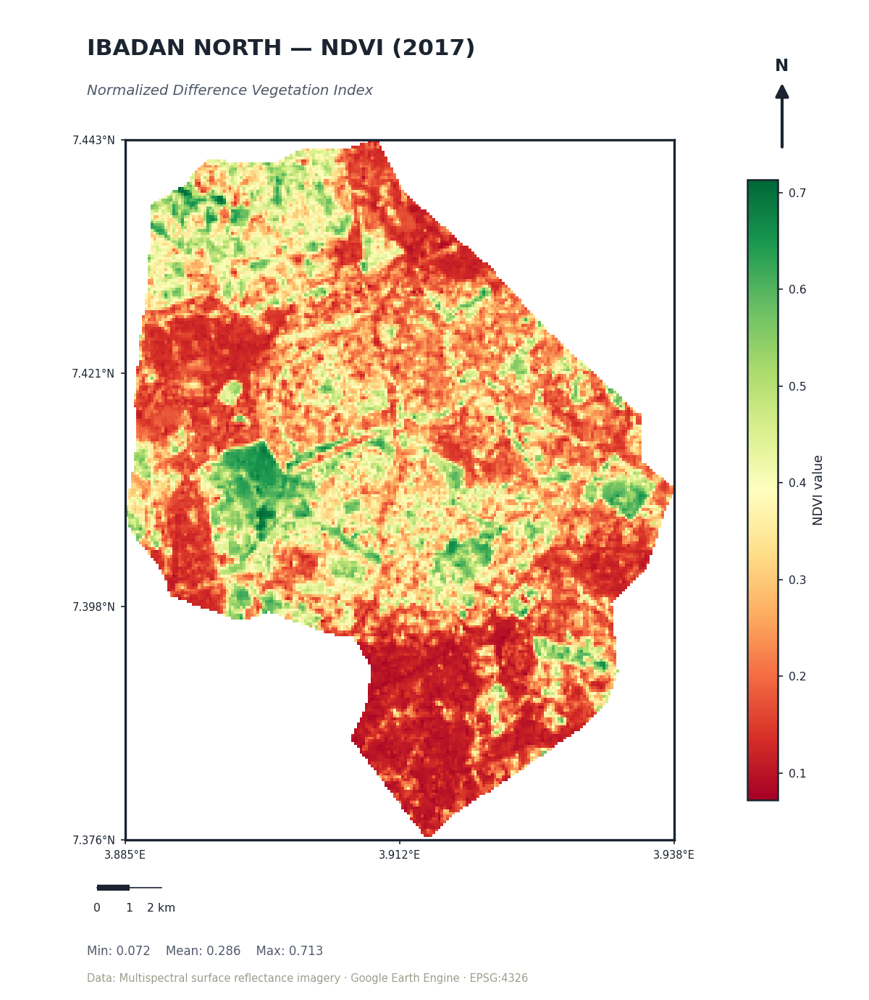
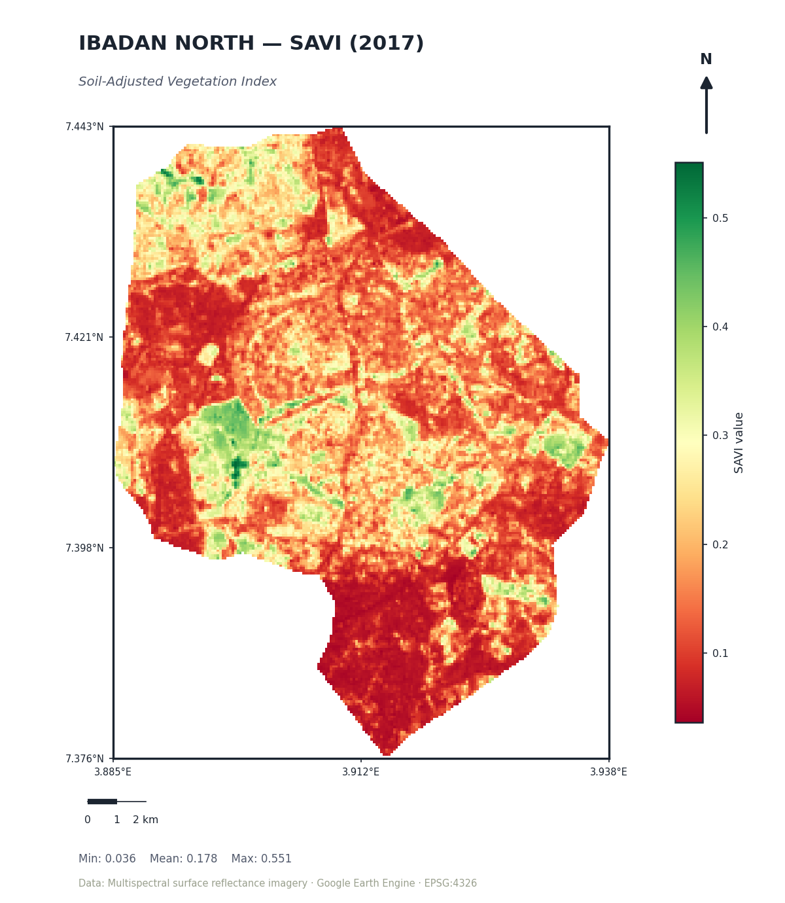
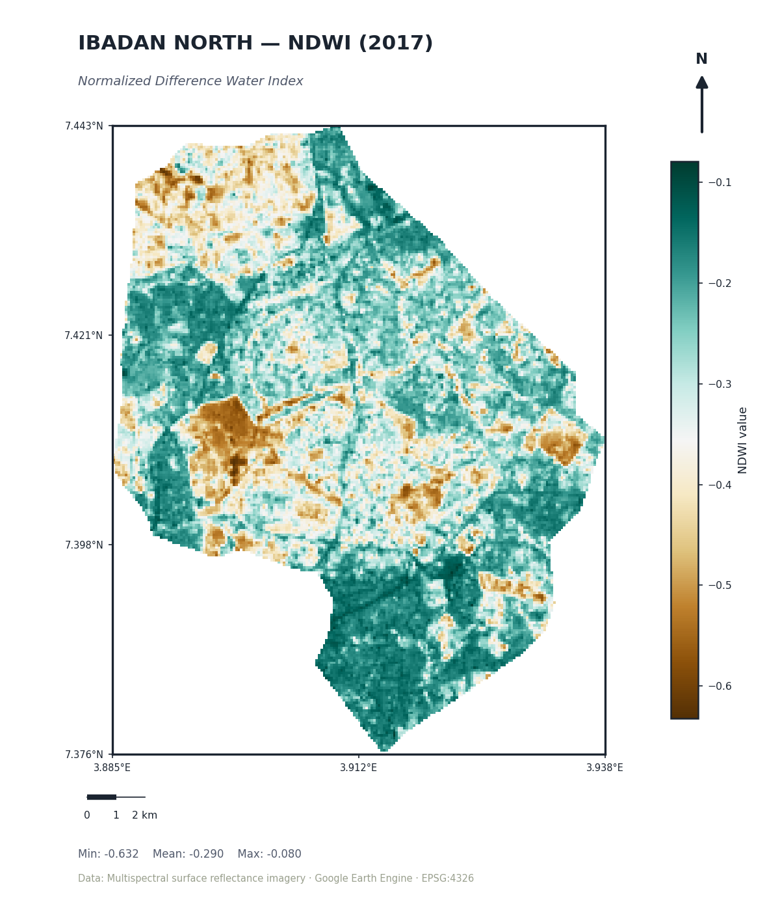
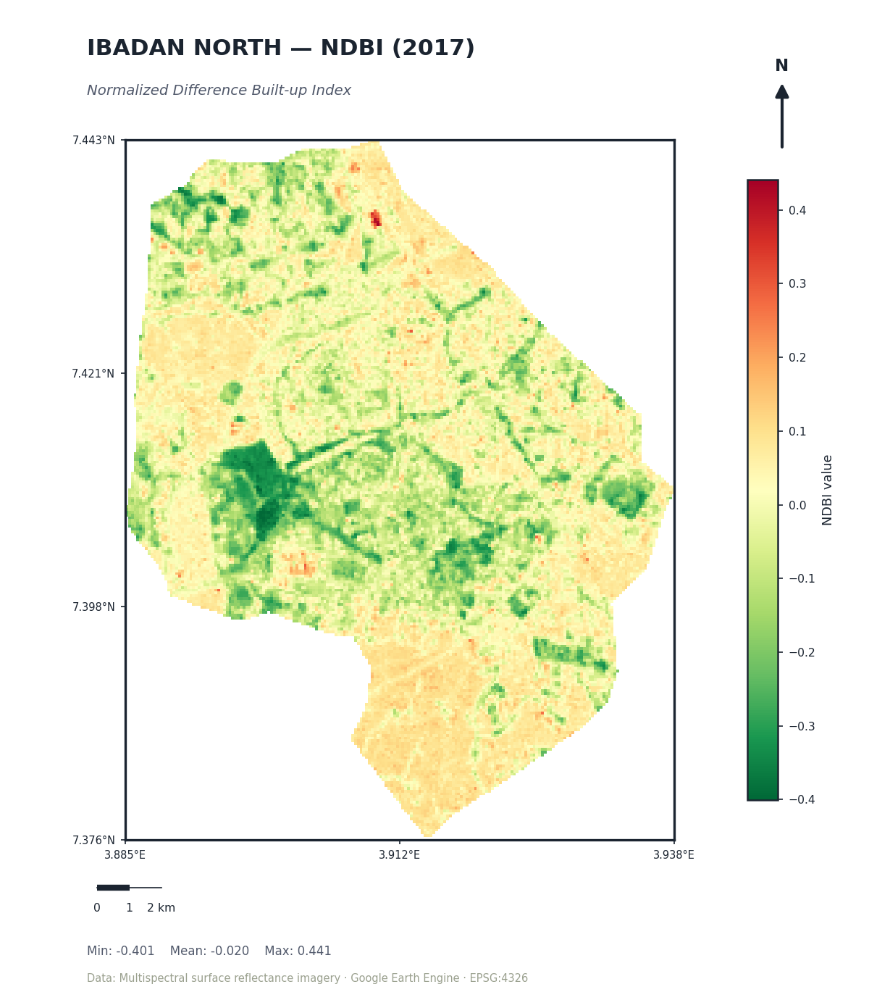

A practice run through four of the most common spectral indices in remote sensing — vegetation, soil-adjusted vegetation, water, and built-up — generated entirely in Google Earth Engine for Ibadan North in 2017.
Spectral indices turn raw multispectral bands into a single number per pixel that highlights a specific land surface property — how green something is, how wet, how built-up. This exercise was about getting comfortable computing and interpreting four of the standard ones in Google Earth Engine for the same area and date, then reading them side by side rather than in isolation, since indices tend to make a lot more sense in contrast with each other than alone.




The real value of this exercise was lining the four up against each other rather than reading any one in isolation. The patches that read high on NDVI and SAVI are the same patches that read low (vegetated) on NDBI — which is exactly the cross-check you'd want, since it confirms the indices are internally consistent rather than just visually similar by coincidence. NDWI staying negative across the whole scene is also informative on its own: it confirms this extent of Ibadan North has no significant open water body, so any future analysis using this data wouldn't need a separate water mask.